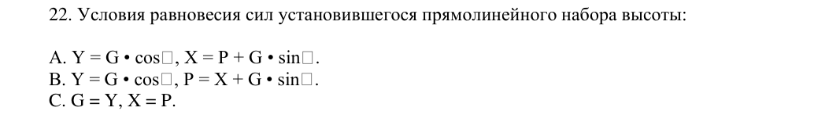

Практическая аэродинамика: вопросы и ответы
Практическая аэродинамика: геометрия крыла, угол атаки, аэродинамические силы и режимы полёта.
Сначала попробуйте ответить самостоятельно, затем раскройте вопрос и сравните ответ с ключом базы. Здесь нет счёта, результаты чтения не меняют прогресс тренировок.
Проверить себя в тренировке →Ответы приведены по тестовой базе MY FREIGHTER с задокументированными исправлениями. Это материал для повторения, а не самостоятельное руководство по эксплуатации. Правовые вопросы включают нормы Узбекистана. Об источнике. Ссылки на полный PDF требуют интернета.
Вопросы раздела
1Углом стреловидности крыла называется:
Ответ по ключу базы
- B. Угол, заключенный между плоскостью симметрии самолета и линией проведенной на крыле
2Хордой крыла называется:
3Удлинением крыла называется:
4Сужением крыла называется:
Ответ по ключу базы
- A. Отношение длины корневой хорды крыла к длине концевой хорды.
5Углом атаки крыла называется:
Ответ по ключу базы
- C. Угол, заключенный между САХ и вектором скорости набегающего потока.
6Относительная толщина профиля крыла это:
7Наиболее нагруженной частью стреловидного крыла является:
8Размах крыла Airbus A321N равен:
9Взлетом самолета называют:
Ответ по ключу базы
- C. Ускоренное движение самолета от начала разбега до достижения безопасной скорости V2, и высоты 10,7 м(35ft)
10TODA – это …
11При выпуске закрылков на больший угол посадочная дистанция:
12Градиент набора высоты это:
Ответ по ключу базы
- A. Отношение изменения высоты к изменению горизонтальной дистанции, выраженное в процентах.
13Угол набора высоты можно определить по формуле:
14Практическим потолком называется:
Ответ по ключу базы
- B. Высота полета, на которой максимальная вертикальная скорость равна 0,5м/с.
15Угол планирования самолета можно определить по формуле:
16Дальность планирования определяется по формуле:
17Условия равновесия сил горизонтального полета:
18Потребной тягой горизонтального полета называется:
Ответ по ключу базы
- A. Тяга, необходимая для выполнения горизонтального полета на данном угле атаки (данной скорости)
19Минимальная потребная тяга горизонтального полета соответствует:
20Границей между первым и вторым режимом полета для турбореактивных самолетов является:
21При увеличении температуры наружного воздуха располагаемая тяга:
22Условия равновесия сил установившегося прямолинейного набора высоты:

Ответ по ключу базы- B. Y = G · cos γ, P = X + G · sin γ.
Символ γ восстановлен редакционно вместо утраченного в PDF графического знака. Ответ B исправляет ошибочный ключ A по уравнениям установившегося набора высоты.
Источник: PDF, стр. 346 ↗23Снижением самолета называется:
24Планированием самолета называется:
25Условия равновесия сил установившегося прямолинейного снижения:
26Правильным виражом называется:
Ответ по ключу базы
- C. Криволинейный полет самолёта в горизонтальной плоскости с постоянным креном, скоростью и без скольжения.
27Взлетная дистанция – это расстояние по горизонтали, проходимое самолетом:
Ответ по ключу базы
- A. От точки старта до точки на высоте 10,7 м (35ft) относительно уровня ВПП в точке отрыва.
28Потребную перегрузку на вираже можно определить по формуле:
29Потребную скорость на вираже можно определить по формулам:
30Потребную тягу на вираже можно определить по формулам:
31Устойчивостью самолета называется:
Ответ по ключу базы
- A. Способность самолета самостоятельно восстанавливать исходное равновесие после прекращения действия на него возмущения.
32Управляемостью самолета называется:
Ответ по ключу базы
- B. Способность самолета отвечать соответствующими перемещениями в пространстве на отклонения органов управления.
33Центровкой самолета называется:
Ответ по ключу базы
- B. Расстояние от носка САХ до центра масс выраженное в процентах от длины САХ
34Средней аэродинамической хордой крыла (САХ) называется:
Ответ по ключу базы
- C. Хорда эквивалентного равновеликого по площади прямоугольного крыла, имеющего такие же аэродинамические силы и моменты, как и заданное крыло.
35Фокусом крыла называется:
Ответ по ключу базы
- A. Точка приложения прироста полной аэродинамической силы при изменении угла атаки, относительно которой момент полной аэродинамической силы не зависит от угла атаки крыла (при постоянной скорости полета).
36Продольным равновесием самолета называется:
37Балансировочная кривая показывает:
Ответ по ключу базы
- A. На сколько градусов необходимо отклонить руль высоты для балансировки самолета в прямолинейном горизонтальном установившемся полёте при сохранении нормальной перегрузки nу = 1.
38Ограничение по предельной-передней центровке устанавливается из условий:
Ответ по ключу базы
- A. Достаточности располагаемого отклонения руля высоты на посадке.
39Устойчивость по перегрузке это:
Ответ по ключу базы
- B. Способность самолета сохранить перегрузку исходного установившегося полета.
40Устойчивость по скорости это:
Ответ по ключу базы
- A. Способность самолета самостоятельно восстанавливать исходную скорость полета.
41Ограничение по перегрузке устанавливается из условий:
42Боковой устойчивостью называется:
Ответ по ключу базы
- C. Устойчивость самолета в путевом и поперечном направлении.
43Путевая (флюгерная) устойчивость это:
Ответ по ключу базы
- A. Способность самолета самостоятельно устранять появившееся скольжение.
44Аэродинамическая крутка это -
45Геометрической круткой крыла называется:
Ответ по ключу базы
- C. Изменение угла установки профилей вдоль размаха крыла.
46Положительное V крыла:
47Полярой самолета называется:
Ответ по ключу базы
- A. График зависимости Су и Сх при различных углах атаки α.
48При выпуске шасси поляра самолета смещается:
49При выпуске закрылков поляра самолета смещается:
50Посадочная дистанция – это расстояние по горизонтали, проходимое самолетом:
Ответ по ключу базы
- C. С высоты 15 м (50 ft) над уровнем порога ВПП до полной его остановки.
51Аэродинамическим качеством самолета называется:
Ответ по ключу базы
- B. Отношение величины подъемной силы самолета к величине силы лобового сопротивления.
52Центр давления крыла это:
Ответ по ключу базы
- A. Точка приложения полной аэродинамической силы крыла, лежащая на САХ.
53Если центр тяжести расположен впереди фокуса, самолет будет:
54Если центр тяжести расположен позади фокуса, самолет будет:
55Если центр тяжести совмещен с фокусом, самолет будет:
56При выпуске закрылков фокус самолета смещается:
57Кривые Жуковского показывают:
Ответ по ключу базы
- A. Зависимость между скоростью V, соответствующим ей углом атаки α и потребной тягой силовой установки в установившемся прямолинейном горизонтальном полете самолета на заданной высоте и с заданной массой
58Минимальная потребная тяга в установившемся горизонтальном полете соответствует:
59При уменьшении массы самолета кривая потребной тяги смещается:
60С увеличением высоты полета кривая располагаемой тяги смещается:
61Дальность планирования можно определить по формуле:
62Аэродинамической интерференцией называется:
Ответ по ключу базы
- A. Взаимное влияние отдельных частей самолета, в результате которого изменяются характеристики обтекания.
63Пограничным слоем называется:
Ответ по ключу базы
- B. Слой воздуха, в котором скорость потока изменяется от нуля до величины, равной местной скорости потока.
64Профильное сопротивление складывается из:
65Лобовое сопротивление самолета:
Ответ по ключу базы
- A. Складывается из профильного и индуктивного сопротивлений.
66Индуктивное сопротивление:
Ответ по ключу базы
- C. Сопротивление крыла, возникающее из-за скоса потока, и возникает при обтекании крыла вследствие перетекания воздуха из области повышенного давления, образующееся под крылом, в область пониженного давления, которая расположена над крылом.
67Сопротивление давления:
68Сопротивление трения:
Ответ по ключу базы
- C. Возникает из-за проявления вязкости воздуха в пограничном слое.
69Ограничение по максимальной скорости полета (по скоростному напору) определяется:
70Ограничение максимальной скорости полета по числу М определяется из условий:
71Волновым кризисом называется:
Ответ по ключу базы
- C. Отрыв пограничного слоя, связанный с возникновением на крыле скачков уплотнения.
72Экранным эффектом называется:
Ответ по ключу базы
- A. Влияние близости земли на распределение давления по профилю крыла и скос потока.